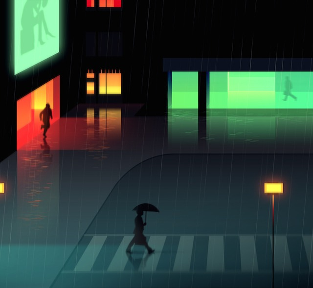

/零仔No.1
这里是文章标题这里是文章标题
中间标题
这只零仔是懒惰，特征主要体现在行为上，走哪睡哪，吃东西会睡着 ，洗澡会睡着， 上学的路上会睡着，他可以映射这个时代的学生们，在压力之下的疲乏于无所作为。
这只零仔是懒惰，特征主要体现在行为上，走哪睡哪，吃东西会睡着 ，洗澡会睡着， 上学的路上会睡着，他可以映射这个时代的学生们，在压力之下的疲乏于无所作为。

这只零仔是懒惰，特征主要体现在行为上，走哪睡哪，吃东西会睡着 ，洗澡会睡着， 上学的路上会睡着，他可以映射这个时代的学生们，在压力之下的疲乏于无所作为。